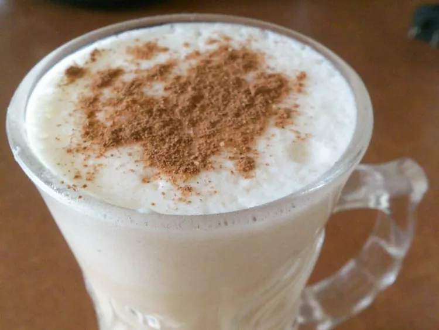

christmas eggnog

This creamy and rich eggnog was especially designed for cold Christmas nights.
ingredients
- 4 egg yolks
- 1 (5 ounce) can sweetened condensed milk
- 1 tablespoon white sugar
- 1 teaspoon vanilla extract
- 4 ½ cups milk
- 4 egg whites
- 1 fluid ounce rum
- ¼ teaspoon ground nutmeg
steps
- In a large mixing bowl, beat egg yolks until they are thickened and light. Gradually stir in condensed milk, sugar, vanilla, and milk. Beat egg whites until stiff, then add them to milk mixture. Stir rum into mixture to taste. Garnish with nutmeg.